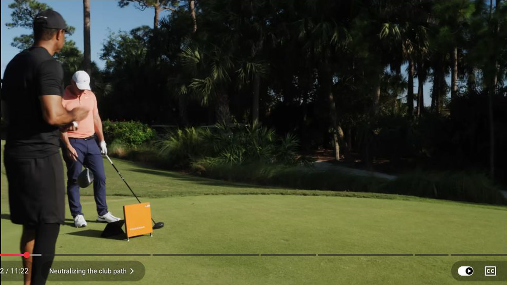
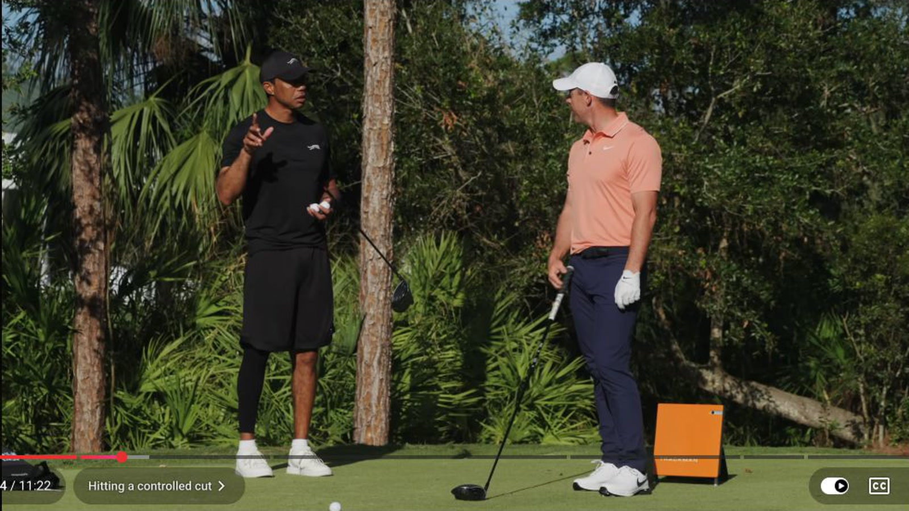
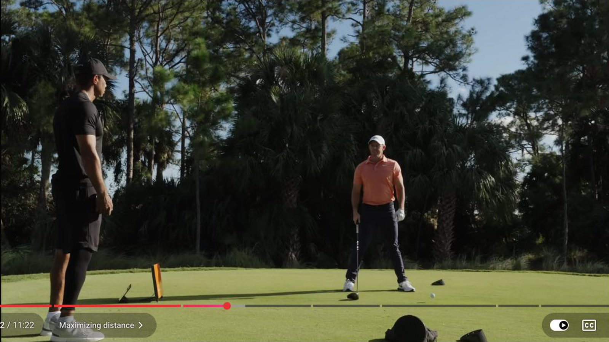
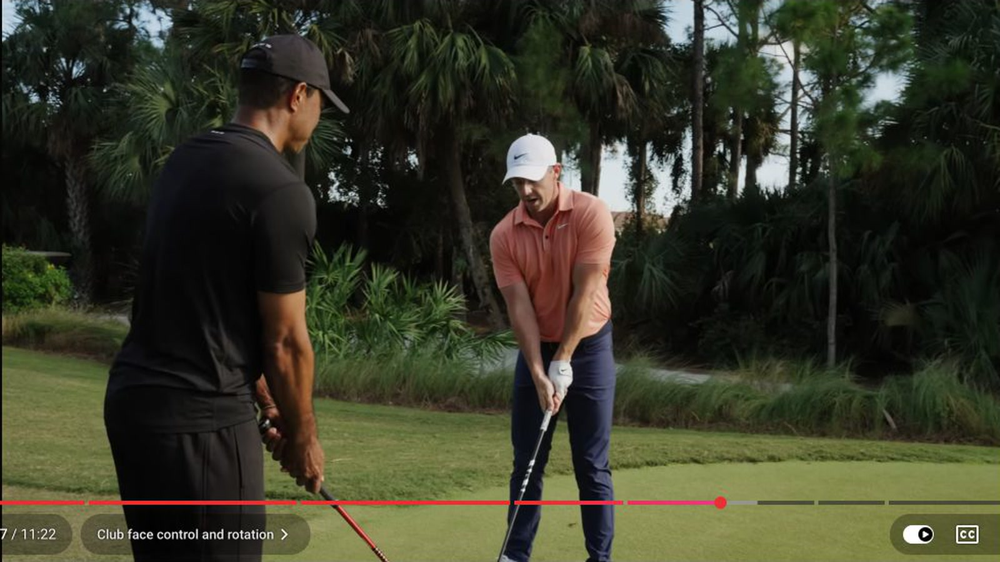
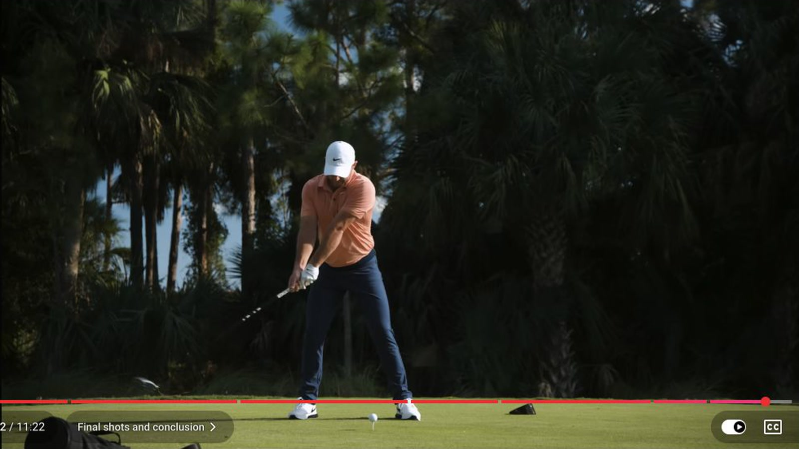

Executive summary
Rory did not rebuild his power swing. He built safer choices around it
Early in his career, Rory could drop the club under the plane, swing far to the right, and match the face well enough to hit a towering draw. The pattern produced elite distance. When the timing drifted, the ball could miss on either side.
His newer driver motion aims for a tighter relationship between club path and face angle. He feels the left arm and shaft form one line, stabilizes the face, and turns his body through the strike. The result is a stock shot with a nearly neutral path. He can then change tee height, posture, ball position, stance width, and intent to produce two additional shots without inventing three unrelated swings.
Evidence boundary. These are Rory's feels and launch-monitor examples from this session. A feel describes what a player senses, not the exact motion every golfer should copy. Club delivery, mobility, strength, strike location, and equipment can change the result.
The three-shot system
One driver, three jobs
| Shot | When Rory uses it | Setup and feel | Flight and tradeoff | Time |
|---|---|---|---|---|
| Neutral stock | Default tee shot when the hole does not demand an extreme shape | Left arm and shaft feel aligned; face feels stable; body rotates through | Tighter path-face numbers and smaller misses than the old high-draw pattern | 1:01 |
| Controlled holder | When the fairway matters more than maximum carry | Lower tee, more upright posture, right side stays high, lower-body rotation clears the club | Lower launch and a cut shape; still fast because center contact improves | 2:02 |
| Maximum distance | When the hole offers room and carry distance has real value | Higher tee, ball farther forward, wider stance, pressure then drive from the right hip | Higher launch and maximum speed; strike and direction become harder to control | 3:41 |
The stock pattern
Neutralizing the path removes the two-way miss
Rory describes his old neutral delivery as roughly six degrees from the inside and four degrees upward. Tiger remembers examples closer to ten degrees in-to-out. Rory could match the face and hit a powerful draw, but the amount of curve management increased the cost of a small timing error.
In the session, a stock swing records a club path of 1.2 degrees and face angle of 0.5 degrees. A later hard swing still shows a path of 0.8 degrees. Rory's point is not that zero is magic. His path and face now live closer together, so the bad shots are less destructive.

The fairway finder
Lowering the tee changes the launch window without turning the shot into a punch
For the controlled cut, Rory lowers the tee and stands a little more upright. The lower tee brings his attack angle down from roughly five or six degrees upward on a full launch to around two degrees upward. He keeps the right side higher through impact, which helps lower the launch and supports the holder shape.
The useful surprise is speed. One controlled example produces 182 mph ball speed. Rory says he often middles this shot more reliably, so the reduction in effort does not create the speed loss he expects. A centered strike can beat a harder swing that misses the efficient part of the face.

The distance shot
Rory creates room for speed before he tries to move faster
The maximum-distance setup moves the ball toward the front foot, raises the tee, and widens the stance. Rory does not chase a precise backswing position. He allows more movement, loads pressure, and then uses a motion that resembles a medicine-ball shot-put drill.
His description is specific: pressure moves into the lead side, the lead foot feels as if it drags back, and the right hip drives the throw. This is an athletic intent rather than a freeze-frame pose. The measured examples reach 188 mph ball speed while the path remains close to neutral.

Face control
A stronger-looking face gives the body permission to keep turning
Tiger has long admired how strong Rory's clubface looks at address. Rory explains the logic: when the face feels secure, he can rotate through the ball. When his lead wrist cups and the face feels open, his arms must throw the club to square it. That late rescue creates timing and direction problems.
Tiger connects the idea to strong-faced iron players such as David Duval and Paul Azinger. The transferable principle is simpler than copying their wrist angles. If the face requires a last-second hand action, body rotation often stalls. A face condition that matches the player's grip and pattern allows the torso to continue moving.

Miss diagnosis
The closing miss shows the correction in real time
On the simulated final hole, Rory tries to hit a controlled holder with wind from the right. His foot slips, rotation slows, and the shot starts poorly. He immediately identifies the chain: without enough rotation, the right arm chases forward, lengthens, and throws the club.
The correction is more aggressive lower-body rotation, not an attempt to steer the face with his hands. The next shot is the picture he wants. Tiger adds an important condition: Rory's stronger lower body now gives him enough stability to brace on the lead side and keep turning through the strike.

Practice sequence
Build the stock shot first, then earn the two variations
- Establish a stock window. Record start line, curve, strike location, club path, face angle, attack angle, and ball speed. A launch monitor helps, but impact spray and a fairway-width target can still expose the pattern.
- Create the fairway version with setup. Lower the tee slightly and test a more upright posture. Keep effort moderate. Compare dispersion and center contact against the stock shot.
- Create the speed version with room. Raise the tee, move the ball forward, and widen the stance. Use a throwing intent only after the player can stay balanced and keep a predictable strike.
- Randomize the call. Name a hole and consequence before each ball. Switch among stock, holder, and maximum carry so the skill becomes a decision rather than a range routine.
- Keep only a shot that has a job. A second shape is useful when it removes trouble or increases carry. It is clutter if the player cannot predict its start line and miss.
My take
The real upgrade is optionality under pressure
Rory already had enough speed to overpower most courses. His limitation was the number of conditions in which he could trust that speed. The old draw asked him to start the ball near trouble and curve it back. A neutral stock shot and controlled cut let him choose a safer starting line when the hole or pressure demands it.
That is why Tiger ends by saying Rory can now win at any venue. The claim is larger than mechanics. A player with one exceptional pattern waits for the right golf course. A player with three reliable driver jobs can adapt the pattern to the course.
Sources and method
What this article is based on
- TaylorMade Golf · Tiger Woods and Rory McIlroy: How to Hit Driver. Primary source for the swing feels, shot choices, launch-monitor numbers, and coaching discussion.
Method: 266 public English-caption rows were reviewed across the full 11:22 video. Six direct frames were captured from the source at 1600x900. Numerical values in the article are examples spoken or shown during this session, not universal targets.